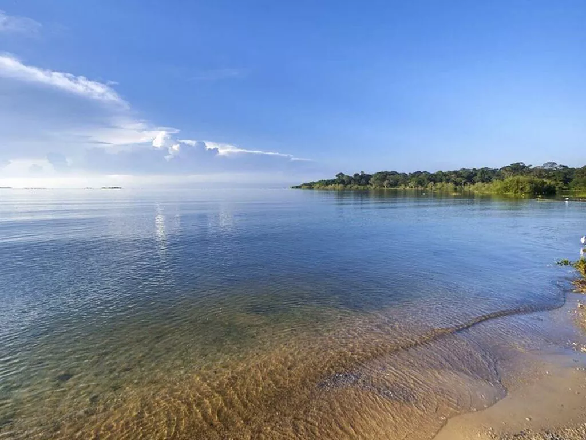

Озеро Виктория

Со стороны это местечко, расположенное в Африке кажется самым обычным озером с голубой водой. Но если даже самые опытные дайверы отважатся сюда нырнуть, сразу станет понятно, почему лучше не иметь дела с этим озером. Дело в том, что водоём населяют гиппопотамы, крокодилы и водоплавающие птицы. Последние конечно не станут вас трогать, но вот кровожадными аллигаторами Виктория просто кишит! Кроме того, здесь водится муха цеце - переносчик самых опасных заболеваний.
Далее